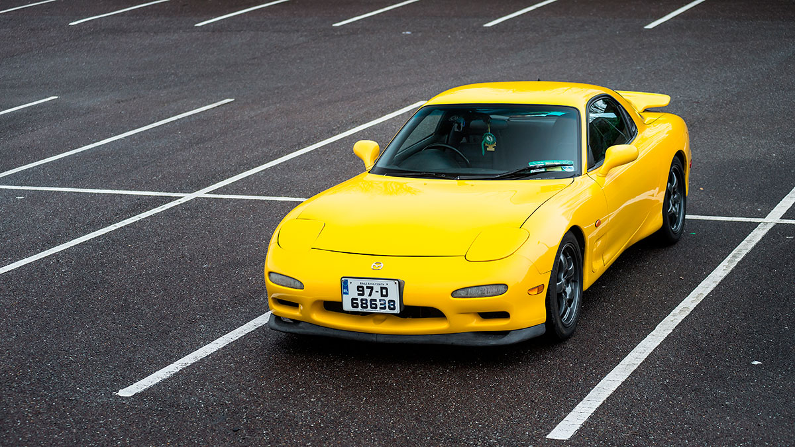

Buttercup Rex
Owen has been a big fan of RX-7s since playing Gran Turismo 1 on the PlayStation. He is also also an Anime fan and there is a series called "Initial D" which features a yellow RX-7. But for some reason he got "distracted" by motorbikes in his 20s and even getting a car license was on the bottom of the list.
Then one day in 2011, while just browsing on the internet he saw this lovely yellow RX7 for sale. A lot of online research followed, and found out, amongst other things that there are only one or two yellow ones in Ireland.
It originated from the Kobe region of Japan and was brought into Ireland during the boom in 2005 by a Dublin based Japanese Car Import Dealer. The mileage is unknown at this time but the engine was tested and guaranteed to be in good condition. Due to a very high asking price and rumours it had some front end damage it sat at their yard until it was bought by a girl from Kerry in 2009 (mileage 123,000 km) for half its original asking price, probably due to the recession. She took very good care of it including getting a new radiator to improve its cooling. She found out that is was a rare RX7, a Type RS-R which was made to commemorate Mazdas 30th anniversary of making rotary engines.
At the end of 2010 she tried to sell it privately but ended up part exchanging it with a Ford dealer (mileage 135,000km). The next 9 months is unknown for sure but legend has it that it was driven for a time by the Ford Dealers wife. Altogether only 300km was driven on it in this period.
It popped up for sale again at the end of 2011 (mileage 135300km) as a private sale and that's when Owen saw it. After his research, he went to look at it and the car was not disappointing. He was aware of the risk of buying a RX-7 that had not yet had an engine rebuild and had rumors of some damage but ended up buying it for a song with a part exchange of a Nissan Primera.
Thankfully the risk worked out and he's very happy with it after over 5 years of ownership (mileage now 166,400km). As RX-7s go, this one impressed with its reliability in that it has never let him down and handles fantastically. The car has affectionately been named "Buttercup Rex".
She is a long way to go yet but step by step it is getting closer to being like she was the day she rolled out the factory door. To that end some rare bits that were missing from the car when when it was bought by Owen were sourced, namely a parcel shelf and a special edition passenger footrest and hopefully in the future it will get a badly needed respray.
At the annual rotary meet in 2016 it was dyno tested at 252hp, not bad for a car rated at 265hp rolling out of the factory 19 years previous, especially as it is still an unmodified stock RX7. Not bad indeed.
And here's some advice from Owen:
"For those interested in the advice I've been given to help with keeping an RX7 running well: I mix 200ml of semi-synthethic 2-stroke oil in with every fuel tank refill (I usually refill from 1/4 tank up to full tank). No using boost until engine is fully warm (at least 82C coolant temp), preferably not even moving the car until 82C. No boosting with air intake temperature over 40C. When turning off, rev it up to about 3000rpm before switching off ignition in order to prevent possible engine flooding. I try to maintain coolant temperature between 82C and 95C.""